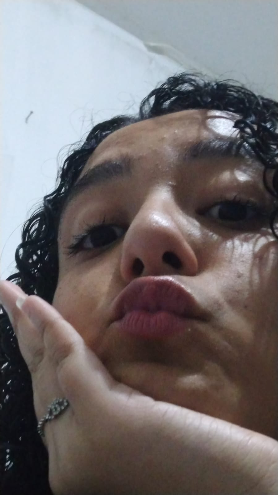
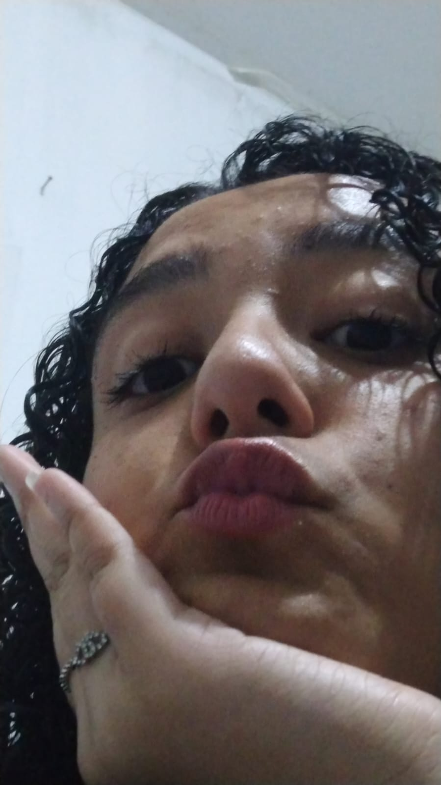

ASS: Cristofer Giovanini
te amo
Oi amor, Você é o motivo do meu mais sincero sorriso, o motivo do brilho no meu olhar. Você é a razão pela qual não me faz desistir de ser feliz, me faz querer continuar tentando, sempre dar o meu melhor pra ver o seu sorriso. Te ver sorrindo me dá forças para acordar como se aquele dia fosse o melhor da minha vida,coragem para enfrentar tudo e todos. é por você que eu quero lutar é por você que eu quero viver . Se eu to feliz, meu bem, é porque tenho você. Nunca imaginei que iria me apaixonar tão rápido por alguém que conheci em uma live. Eu te amo. obrigado por existir e me dar a chance de ficar com Você Com todo meu carinho.
Ass:Cristofer Giovanini